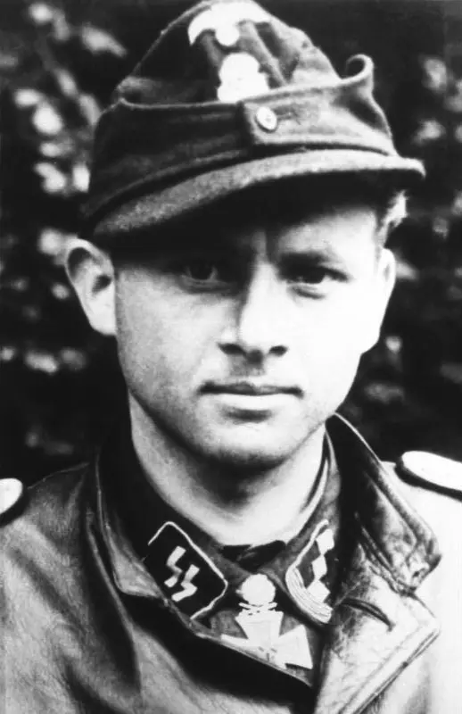

Michael Wittmann Panzer Ace
The Black Baron

Michael Wittmann was a highly decorated tank commander serving in the 101st SS Heavy Panzer Battalion
Here's a timeline of Michael Wittmann's life:
- 1914 - Born in Vogelthal
- 1930 - Michael completes his 10 years of scholastic training
- 1936 - Wittmann joins the Waffen SS
- 1939 - Wittmann is promoted to SS-Unterscharführer
- 1940 - Transferred SS-Sturmgeschutz Ausf A
- 1941 - Transferred to the Eastern Front
- 1941 - Wittmann awarded Iron Cross Second Class for knocking out 6 tanks
- 1942 - Joins 13th Kompanie da SS LSSAH - Pz III Ausf L/M
- 1943 - Wittmann switches to Tiger I
- 1943 - Wittmann scores 8 tanks and 7 anti-tank guns destroyed in Battle at Kursk
- 1943 - In November Wittmann's crew destroyed 10 T-34's and 5 anti-tank guns
- 1944 - By this time Wittmann's combined total of destroyed tanks would rise to 66
- 1944 - Wittmann awarded the Knight's Cross of the Iron Cross
- 1944 - Wittmann was awarded the Oak Leaves on 30th January for the destruction of 177 tanks
- 1944 - (Death of Michael Wittmann) Battle of Villers-Bocage. While in command of a Tiger I tank, Wittmann destroyed up to 14 tanks, 15 personnel carriers and two anti-tank guns withing 15 minutes for the loss of his own tank.